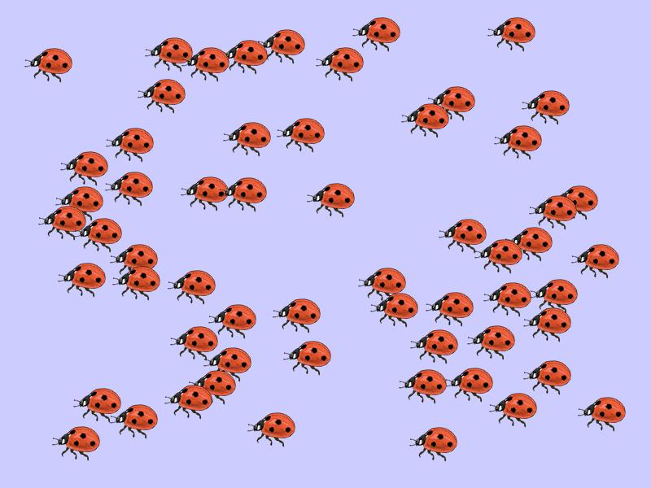

<!doctype html>
<html>
  <head>
  <title>Jars</title>
  <script src="./js/jquery.min.js"></script>
  <script src="./jspsych-6/jspsych.js"></script>
  <script src="./jspsych-6/plugins/jspsych-survey-multi-choice.js"></script>
	<script src="./jspsych-6/plugins/jspsych-html-button-response.js"></script>
	<script src="./jspsych-6/plugins/jspsych-image-button-response.js"></script>
  <script src="./jspsych-6/plugins/jspsych-survey-text.js"></script>
  <script src="./jspsych-6/plugins/jspsych-survey-text-time.js"></script>
	<script src="./js/welcome.js"></script>
  <link href="./jspsych-6/css/jspsych.css" rel="stylesheet" type="text/css"></link>
  </head>

  <body>
	  <div id="welcome"></div>
  </body>

  <script>

/////////////////////////////// EXPERIMENT 13 ///////////////////////////////////////
// re-inviting expt. 9 and 11 participants to complete an individual differences battery
////////////////////////////////////////////////////////////////////////////////////

// initialise timeline
var timeline = [];

// // if participants get an instruction check question wrong, they will loop back to the previous instruction page
var introloop = [];

// generate a random turkcode
var turkcode = (Math.floor(Math.random() * 899999) + 100000).toString();
var pid = Math.floor(Math.random() * 100000);
var filename = "urns-expt13" + pid + "_turkcode_" + turkcode;

// randomise variables
// to determine earnings in the BEAST
// 1. randomly select a round (from 0-5)
var randRound = Math.round(Math.random() * (4-0) + 0);

// 2. randomly select estimate A or B
// var noEstimates = ['A', 'B'];
var noEstimates = 'A';
var randEstimate = jsPsych.randomization.sampleWithoutReplacement(noEstimates, 1);

if (randEstimate == 'A') {
  var selectedEstimates = estimatesA;
} else {
  var selectedEstimates = estimatesB;
};
console.log(selectedEstimates);

// // specify images to preload
// var images = ['img/closeddoor.jpg', 'img/redjar.png', 'img/bluejar.png','img/greyball.PNG',
//               'img/redball.PNG', 'img/blueball.PNG', 'img/attnCheck.JPG', 'img/scale-based-on-balls.JPG', 'img/scale-based-on-guesses.jpg', 'img/scale-based-on-balls-and-guesses.jpg'];
// jsPsych.pluginAPI.preloadImages(images);

// --------------------------- Randomise variables ---------------------------- //

// ------------ save data to unsw server ----------------------- //
function saveData(name, data){
  	var xhr = new XMLHttpRequest();
  	xhr.open('POST', 'save_data.php'); // 'write_data.php' is the path to the php file described above.
  	xhr.setRequestHeader('Content-Type', 'application/json');
  	xhr.send(JSON.stringify({filename: filename, filedata: data})); //specify a variable "filename"
  };

/* function to start the jsPsych experiment */
function startExperiment(){

  jsPsych.data.addProperties({  // record these variables in the jsPsych data
    turkcode: turkcode

  });

  jsPsych.init({
    timeline: timeline,
    // preload_images: images,
    // on_trial_finish: function(data){saveData(filename, jsPsych.data.get().csv())},  // use for UNSW server - uncomment to locally save data file as csv
    on_finish: function() {
      jsPsych.data.displayData('csv');

      endExperiment( jsPsych.data.get().csv(), function() { document.write('<div id="endscreen" class="endscreen" style="width:1000px"><div class="endscreen" style="text-align:center; border:0px solid; padding:10px; font-size:120%; width:800px; float:right"><p><br><br><br>All done!<br><br>Your completion code is <span id="turkcode" style="font-weight:bold;font-size:130%">' + turkcode + '</span>. To receive payment for the HIT, return to the Amazon Mechanical Turk page and enter this code. Please contact us if something goes wrong and we\'ll fix it as quickly as possible.</p></div></div>') })
    }
  });
};

/* save and finish */
function endExperiment(dataset,callback) {
 // $.post('submit',{"content": dataset}); // uncomment to post data to google cloud
 setTimeout(callback,1000)
};

/* change the display property of a set of objects */
function setDisplay(theClass, theValue) {
 var i, classElements = document.getElementsByClassName(theClass);
 for (i = 0; i < classElements.length; i = i + 1) {
  classElements[i].style.display = theValue;
 }
};

// -------------------------- INSTRUCTIONS ----------------------------- //

var instructionsPreempt = {
  type: 'html-button-response',
  timing_post_trial: 0,
  button_html: '<button class="jspsych-btn" style="display:none">%choice%</button>',
  choices: ['Click here to begin'],
  on_start: function() {setTimeout(function(){setDisplay("jspsych-btn","")}, 70)},
  is_html: true,
  stimulus: "The experiment will begin now.<br><br>The first few pages will show the instructions.<br>Make sure to read them carefully, as you will be asked questions to check that you understand them." +
  "<br><br>If you answer a question incorrectly, you will be taken back to the instructions page.<br><br>"
};
// timeline.push(instructionsPreempt);

// --------------------- //


// 1. welcome
var beastImgHeight = 400;

// 2. Instructions - points depend on accuracy of estimates
var beastInsts1 = {
  type: 'html-button-response',
  timing_post_trial: 0,
  button_html: '<button class="jspsych-btn" style="display:none">%choice%</button>',
  choices: ['Click here to begin'],
  on_start: function() {setTimeout(function(){setDisplay("jspsych-btn","")}, 30)},
  is_html: true,
  stimulus: "In this task, you have to make a number of estimates.<br><br>" +
    "The number of Points you earn in this task depends on <i>how accurate</i> your estimates are.<br><br>"
};
// timeline.push(beastInsts1);

// 3. Instrutions - explain 5 rounds of animal preloadImages
var beastInsts2 = {
  type: 'html-button-response',
  timing_post_trial: 0,
  button_html: '<button class="jspsych-btn" style="display:none">%choice%</button>',
  choices: ['Click here to begin'],
  on_start: function() {setTimeout(function(){setDisplay("jspsych-btn","")}, 30)},
  is_html: true,
  stimulus: "<b>Instructions 1/3</b><br><br>This task consists of <b>5 rounds</b>.<br>" +
    "At the beginning of each round, you will observe an image showing a number of animals.<br><br>" +
    // "For example:<br><br>" +
    "For example:<br><br>" +
    "The image will disappear after 6 seconds, upon which<br>" +
    "<b>you have to estimate how many animals were displayed.</b><br><br>" +
    "The more accurate your estimate, the more Points you can earn.<br>We explain this later.<br><br>"
};
introloop.push(beastInsts2);

// 4. Instructions - will make an estimate and receive an estimate
var beastInsts3 = {
  type: 'html-button-response',
  timing_post_trial: 0,
  button_html: '<button class="jspsych-btn" style="display:none">%choice%</button>',
  choices: ['Click here to begin'],
  on_start: function() {setTimeout(function(){setDisplay("jspsych-btn","")}, 30)},
  is_html: true,
  stimulus: "<b>Instructions 2/3</b><br><br>" +
    "Once the image has disappeared, you have to enter your estimate of how many animals were displayed.<br>" +
    "You have to enter your estimate within <b>15 seconds</b>.<br>" +
    "This is your estimate for <b>part A</b> of a round.<br><br>" +
    "Once you have entered your estimate, <b>part B</b> of the round begins.<br>" +
    "You can observe the <i>part A estimate of another MTurker</i>.<br><br>" +
    "Over 100 MTurkers participated in a previous session in which they completed this task.<br>" +
    "In each round, you can observe the part A estimate of <b>ONE</b> of these previous MTurkers.<br>" +
    "The previous MTurkers saw the same image as you. They also saw it for 6 seconds.<br>" +
    "After the image disappeared, they also had to estimate how many animals were displayed.<br>" +
    "They could also earn a higher bonus if their estimate was more accurate.<br><br>" +
    "You then have to <b>enter a second estimate</b>.<br>" +
    "You can enter the same estimate as in part A, or adjust it as you wish.<br>" +
    "You have to enter your second estimate within <b>45 seconds</b>.<br>" +
    "This is your estimate for <b>part B</b> of a round.<br><br>" +
    "<i>Note: if you do not enter your estimate within the time limit, you will be removed from the HIT and we will not be able to pay you.</i><br>" +
    "Once you have entered your part B estimate, the round is over and a new round begins.<br><br>"
};
introloop.push(beastInsts3);

// 5. Instructions - how points work
// 100 points = $1 USD

var beastInsts3 = {
  type: 'html-button-response',
  timing_post_trial: 0,
  button_html: '<button class="jspsych-btn" style="display:none">%choice%</button>',
  choices: ['Click here to begin'],
  on_start: function() {setTimeout(function(){setDisplay("jspsych-btn","")}, 30)},
  is_html: true,
  stimulus: "<b>Instructions 3/3</b><br><br><b>Your bonus earnings</b><br><br>" +
    "The more accurate your estimates, the more Points you can earn in this task.<br>" +
    "At the end of this HIT, the Points you earn are converted into your bonus earnings.<br>" +
    "Your bonus for this task is calculated as follows.<br><br>" +
    "Once you have completed this HIT, the computer will randomly select 1 of the 5 rounds of this task.<br>" +
    "Then the computer will randomly select part A or B.<br>" +
    "Your estimate for that part is used to calculate your earnings for this task.<br><br>" +
    "<b>If you estimated the number of animals <i>exactly right</i>, you earn 100 Points = $1.00.</b><br>" +
    "<b>For each number that you are off, we subtract 5 Points ($0.05).</b><br>" +
    "The number of Points you earn in this task cannot become negative.<br><br>" +
    "For example, if the actual number of animals in the image was 60, and your estimatation 53, you were 7 off.<br>" +
    "This would mean that we subtract 7 <i>x</i> 5 = 35 Points.<br>Your earnings for that estimate would be 100 - 35 = 65 Points = $0.65.<br><br>" +
    "Click 'Continue' if you understand your task.<br>A brief quiz will follow to check your understanding.<br><br>"
};
introloop.push(beastInsts3);

// 6. instructions check questions x 3
var instructAnswers = ["Correct", "Incorrect"];
var correctString1 = '{"estimate":"' + instructAnswers[0] + '","second":"' + instructAnswers[0] + '","points":"' + instructAnswers[0] + '"}'; // important that there are no spaces in this string
var instruct1Correct = false;

var instructQ1Check = {
  type: "survey-multi-choice",
  preamble: ["<p align='center'><b>Check for understanding</b></p>" +
    "To check your understanding of the task, please indicate for each of these statements whether they are correct or incorrect."],
  questions: [{prompt: "In each round of this task you will view an image. You have to estimate how many animals were displayed in it.",
                options: instructAnswers,
                name: "estimate",
                required: true},
              {prompt: "Once you have entered your estimate, you can observe the estimate of another MTurker who completed this task before." +
                        "You can then make a second estimate.",
                options: instructAnswers,
                name: "second",
                required: true},
              {prompt: "The more accurate your estimates, the more Points you can earn.",
                options: instructAnswers,
                name: "points",
                required: true}],
  on_finish: function(data) {
    if(data.responses == correctString1) {instruct1Correct = true;}
  }
};
introloop.push(instructQ1Check);

// define the splash screen shown if participants answer incorrectly
var splash_screen1 = {
  type: 'html-button-response',
  button_html: '<button class="jspsych-btn">%choice%</button>',
  choices: ['Click here to read the instructions again'],
  on_start: function() {setTimeout(function(){setDisplay("jspsych-btn","")}, 500)},
  is_html: true,
  stimulus: 'At least one of your answers was incorrect.'
};

// define an additional conditional that will only show the splash screen if the answer was wrong
var conditional_splash1 = {
  timeline: [splash_screen1],
  conditional_function: function(data) {return !instruct1Correct} // skip if correct
};
introloop.push(conditional_splash1);

// add the first instructions block + check question to a loop node
var loop_node = {
  timeline: introloop,
  loop_function: function(data) {return !instruct1Correct} // stop looping if correct
};
// timeline.push(loop_node);

// begin for loop for 5 rounds
var animals = ['ants', 'bees', 'cranes', 'crickets', 'flamingos'];
// var animals = jsPsych.randomization.repeat(animals, 1);
var i;

var devs = [0.25, 0.15, 0.2, 0.15, 0.25];

var correctNos = [93, 78, 59, 74, 69];

/* estimates from previous session (without social information) */
var peersMat = [
    [20,24,25,30,33,35,35,38,40,42,43,45,45,46,48,50,50,50,50,52,55,55,56,56,57,60,60,60,60,62,64,64,64,65,65,65,65,67,67,69,69,70,70,70,70,70,70,70,70,70,72,72,72,74,75,75,75,75,75,75,75,75,76,78,80,80,80,80,80,80,80,84,85,85,85,85,85,86,89,89,90,90,95,98,100,100,100,120,120,120,120,120,125,126,130,155],
    [28,30,30,30,30,35,37,40,40,41,44,45,47,49,50,50,52,53,55,56,56,56,58,58,59,60,60,60,60,60,60,60,62,62,62,62,63,63,65,65,65,65,65,68,68,68,70,70,70,70,70,70,70,72,72,74,75,75,75,77,77,77,78,80,80,80,80,80,80,80,80,80,84,84,85,85,85,85,88,90,90,90,90,90,91,98,100,100,100,100,103,103,110,110,110,145],
    [18,30,30,30,30,34,35,35,35,38,40,40,40,40,42,44,45,45,45,45,45,45,45,48,48,48,48,48,49,50,50,50,50,50,50,50,50,50,51,51,52,52,52,52,54,54,55,55,55,55,55,55,55,55,56,56,58,59,60,60,60,60,60,60,60,64,64,65,65,65,65,65,65,65,65,65,66,66,68,70,70,75,75,75,75,79,80,80,81,86,86,88,89,95,100,101],
    [20,21,25,40,40,41,42,45,45,46,47,48,48,50,50,53,55,55,55,55,55,55,55,56,58,58,60,60,60,60,62,64,65,65,65,65,65,67,67,68,69,70,70,70,70,70,70,70,70,70,70,70,70,71,72,73,74,75,75,75,75,75,75,75,76,77,78,80,80,80,80,80,80,80,80,83,88,88,88,90,90,90,92,95,95,100,100,101,102,110,110,110,120,121,140,150],
    [23,25,28,30,32,33,33,34,35,38,40,40,40,40,40,41,42,42,45,45,47,48,49,50,50,50,50,53,53,54,55,55,55,55,55,55,55,55,56,57,57,58,58,59,60,60,60,60,60,60,60,60,60,62,62,62,62,62,65,65,65,65,65,65,65,66,66,66,66,68,68,69,70,70,70,70,72,72,73,75,75,75,76,77,80,80,80,84,85,85,90,92,102,110,125,140]
    ];

var estimatesA = [];
var estimatesB = new Array;

var lastA = 0;
var closest = 0;

var rounds1 = [0,1,2,3,4];

for (i = 0; i < animals.length; i++) {
  // 7. get ready - click to see an image

  if (i < 1) {
    var text1 = ["You have answered all control questions correctly.<br>The task starts now.<br><br>"];
  } else {
    var text1 = ["A new round starts now.<br><br>"];
  };

  var preRound = {                   // 2nd informant
    type: 'html-button-response',
    button_html: '<button class="jspsych-btn" style="display:none">%choice%</button>',
    choices: ['Continue'],
    on_start: function() {setTimeout(function(){setDisplay("jspsych-btn","")}, 60)},
    is_html: true,
    stimulus: text1 + "When you click below, an image will appear showing a number of <b>" + animals[i] + "</b>.<br>" +
      "After <b>6 seconds</b>, the image disappears.<br>" +
      "A box will appear in which you have to estimate how many " + animals[i] + " there were.<br><br>" +
      "You have to enter your estimate <b>within 15 seconds</b>.<br><br>" +
      "Click below when you are ready.<br><br>"
  };
  // timeline.push(preRound);

  // 8. see image

  var viewImage = {
    type: 'image-button-response',
    stimulus: 'img/' + animals[i] + '.jpg',
    stimulus_height: beastImgHeight,
    choices: ['Continue'],
    button_html: '<button class="jspsych-btn" style="display:none">%choice%</button>',
    stimulus_duration: 6000,
    // stimulus_duration: 2000,
    // trial_duration: 2000,
    trial_duration: 6000,
    response_ends_trial: false
  };
  // timeline.push(viewImage);

  // function showLastEstimate() {
  //   // var lastEstimate = [];
  //   var lastEstimate = jsPsych.data.get().last(1).values()[0].responses;
  //   console.log(lastEstimate);
  // };


  var thisDev = devs[i];

  var estimateA = {
    type: 'survey-text-time',
    questions: [
      {prompt: "How many " + animals[i] + " were shown in the image?",
      placeholder: "Number of " + animals[i],
      required: true}
    ],
    preamble: "Round " + [i + 1] + ": part A estimate",
    time_limit: 5000,
    // time_limit: 15000,
    on_finish:function(data) {
      // console.log(rounds1[i]);
      // if (i == randRound) {
        estimatesA.push(data.responses);
        console.log("randomly selected round")
      // };
      lastA = jsPsych.data.get().last(1).values()[0].responses; // don't include "var" if want to access this variable outside function
      lastA = lastA.substr(14,2);
      console.log(lastA);

      // was participant's guess higher/lower than the correct answer?
      if (lastA < correctNos[i]) {
        var target = lastA * (1 + thisDev);
      } else {
        if (lastA == correctNos[i]) {
          if (Math.random() < 0.5) {
            var target = lastA * (1 + thisDev);
            }
        } else {
          var target = lastA * (1 - thisDev);
        }
      };

      closest = 99;
    // closest = peersMat[i].reduce(function(prev, curr) {
    //     return(Math.abs(curr - target) < Math.abs(prev - target) ? curr : prev);
    //   });
      return(closest)

    },
  };

  var estimateA2 = {
    type: 'survey-text-time',
    questions: [
      {prompt: "How many " + animals[i] + " were shown in the image?",
      placeholder: "Number of " + animals[i],
      required: true}
    ],
    preamble: "Round " + [i + 1] + ": part A estimate",
    time_limit: 5000,
    // time_limit: 15000,
    on_finish:function(data) {
      // console.log(rounds1[i]);
      // if (i == randRound) {
        // estimatesA.push(data.responses);
        // console.log("NOT randomly selected round")
      // };
      // return showLastEstimate();
      // console.log(data.responses);
    },
  };

    // if (i == randRound) {
      // timeline.push(estimateA)
    // } else {
    //   timeline.push(estimateA2)
    // };


  // timeline.push(estimateA);

  // var lasttrialdata = jsPsych.data.getLastTrialData();
  // var lastEstimate = jsPsych.data.get().last(1).select('responses').values;

// show peer estimate

  // 9. provide estimate

  // var lastAA = '999';
  //   var myfunc = function(stringA) {
  //     lastAA = stringA.substring(14,16)
  //     console.log(lastAA);
  //   };
  //
  //   var trial = {
  //     type: 'call-function',
  //     func: myfunc(lastA)
  //   };
  //   timeline.push(trial);

  // var lastA = "12345678911234567".substr(14,16);

  if (lastA < correctNos[i]) {
    console.log("guess smaller than correct")
  } else {
    console.log("guess larger")
  };


//   // var thisDev = devs[i];  // which deviation applies in this round?
//   var firstGuess = 70;
//
//
//   // was participant's guess higher/lower than the correct answer?
//   if (firstGuess < correctNos[i]) {
//     var target = firstGuess * (1 + thisDev);
//   } else {
//     if (firstGuess == correctNos[i]) {
//       if (Math.random() < 0.5) {
//         var target = firstGuess * (1 + thisDev);
//         }
//     } else {
//       var target = firstGuess * (1 - thisDev);
//     }
//   };
//
// var closest = peersMat[i].reduce(function(prev, curr) {
//     return(Math.abs(curr - target) < Math.abs(prev - target) ? curr : prev);
//   });
//   console.log(closest)

  // 10. revise - using previous estimates
  var estimateB = {
    type: 'survey-text',
    questions: [
      {prompt:  "You can now enter your part B estimate below.", placeholder: "Number of " + animals[i]}
    ],
    preamble: "Round " + [i + 1] + ": part B estimate<br><br>" +
      "Your part A estimate of <b>" + lastA + "</b> has been recorded.<br><br>" +
      "Now, we show you the part A estimate of an MTurker who completed this task before.<br>" +
      "This previous MTurker saw the same image as you just did. They also saw it for 6 seconds.<br><br>" +
      "Their estimate was <b>" + closest + "</b>.",
    on_finish:function(data) {
      // var lastEstimate = jsPsych.data.responses;
      estimatesB.push(data.responses);
      // console.log(data.responses);
    },

    // trial_duration: 3000
  };
  // timeline.push(estimateB);

  // 11. flag end of round, continue next round, go back to 7, unless last round
  var endRound = {                   // 2nd informant
    type: 'html-button-response',
    button_html: '<button class="jspsych-btn" style="display:none">%choice%</button>',
    choices: ['Continue'],
    on_start: function() {setTimeout(function(){setDisplay("jspsych-btn","")}, 60)},
    is_html: true,
    stimulus: "Round completed<br><br>This is the end of round " + [i + 1] + ".<br>" +
      "Click below to continue.<br><br>"
  };
  // timeline.push(endRound);

};

// 12. describe earnings

//
// function getEstimate(round, ests) {
//   var sel = ests[round];
//   return(sel);
// };
//
// var xx = getEstimate(randRound, selectedEstimates);
// console.log(xx)

var selectedEstimate = [];
// var xx = Object.assign({}, selectedEstimates);
// var selectedEstimate = xx[randRound];
// var selectedEstimate = selectedEstimates[randRound];
// console.log(selectedEstimates[randRound]);
// var selectedEstimate = 55;

// console.log(selectedEstimate);

var thisCorr = correctNos[randRound];
// console.log(thisCorr);

var deviation = Math.abs(selectedEstimate - thisCorr);
// console.log(deviation);
var subtraction = Math.min(100, 5*deviation);
// console.log(subtraction);

var points = Math.max(100 - deviation*5, 0);
// console.log(points);

var subtractionT = ["As a consequence, we subtract " + deviation + " x 5 = " + subtraction + " Points."];
if (deviation > 20) {
  var subtractionT = ["As a consequence, we would have subtracted " + deviation + " x 5 Points.<br>" +
    "However, as stated in the instructions, your number of Points cannot become negative, so we subtract 100 Points."]
};

var earnings = {                   // 2nd informant
  type: 'html-button-response',
  button_html: '<button class="jspsych-btn" style="display:none">%choice%</button>',
  choices: ['Continue'],
  on_start: function() {setTimeout(function(){setDisplay("jspsych-btn","")}, 60)},
  is_html: true,
  stimulus: "Your earnings<br><br>Your earnings are calculated as follows.<br><br>" +
    "The computer randomly selected round <b>" + [randRound + 1] + "</b>.<br>" +
    "Then, the computer randomly selected <b>part " + randEstimate + "</b>.<br><br>" +
    "In that case, you estimated how many <b>" + animals[randRound] + "</b> there were in the image.<br>" +
    "Your estimate in that case was <b>" + selectedEstimate + "</b>.<br>" +
    "The actual number of " + animals[randRound] + " in the image was <b>" + thisCorr + "</b>.<br><br>" +
    "This means that your estimate was <b>" + deviation + "</b> off the actual number.<br>" +
    subtractionT + "<br><br>This means that your earnings from this task are 100 - " + subtraction + " = <b>" + points + " Points</b>.<br><br>"
};
// timeline.push(earnings);

// -------------------- NUMERACY ITEMS ---------------------------------- //
// var numInsts = {
//   type: 'html-button-response',
//   button_html: '<button class="jspsych-btn" style="display:none">%choice%</button>',
//   choices: ['Click here to continue'],
//   on_start: function() {setTimeout(function(){setDisplay("jspsych-btn","")}, 3000)},
//   is_html: true,
//   stimulus: "Next, you will answer 7 short numeracy questions.<br><br>" +
//     "You may use pen and paper if you want, but please do NOT use a calculator.<br><br>" +
      // "Do not use a calculator but feel free to use pen and paper."
// };
// timeline.push(numInsts);

var numeracyInstructions = {
  type: 'html-button-response',
  button_html: '<button class="jspsych-btn" style="display:none">%choice%</button>',
  choices: ['Click here to continue'],
  on_start: function() {setTimeout(function(){setDisplay("jspsych-btn","")}, 3000)},
  is_html: true,
  stimulus: "You will now see several numeracy problems that vary in difficulty.<br><br>" +
    "Try to answer as many as you can. There is no time limit.<br>" +
    "Do not use a calculator, but you can use pen and paper to work things out.<br><br>"
};
// timeline.push(numeracyInstructions);

// 3 items from Schwartz, Woloshin, Black, & Welch (1997)
var schwartz_coin = {    // correct answer = 500
  type: 'survey-text',
  questions:
    [{prompt: "Imagine that we flip a fair coin 1,000 times.<br>" +
    "What is your best guess about how many times the coin would come up heads in 1,000 flips?",
    placeholder: "_____ times out of 1,000",
    required: true}]
};
// timeline.push(schwartz_coin);

var schwartz_bigbucks = {    // correct answer = 10
  type: 'survey-text',
  questions:
    [{prompt: "In the Big Bucks Lottery, the chance of winning a $10 prize is 1%.<br>" +
    "What is your best guess about how many people would win a $10 prize<br>if 1,000 people " +
    "each buy a single ticket to Big Bucks?",
    placeholder: "_____ people out of 1,000",
    required: true}]
};
// timeline.push(schwartz_bigbucks);

var schwartz_car = {    // correct answer = 0.1%
  type: 'survey-text',
  questions:
    [{prompt: "In Acme Publishing Sweepstakes, the chance of winning a car is 1 in 1,000.<br>" +
    "What percent of tickets to Acme Publishing Sweepstakes win a car?",
    placeholder: "_____ %",
    required: true}]
};
// timeline.push(schwartz_car);

// 4 items from Berlin Numeracy Test (Cokely, Galesic, Schulz, Ghazal, & Garcia-Retamero (2012))
var bnt_5die = {      // correct answer = 30/50 throws
  type: 'survey-text',
  questions:
    [{prompt: "Imagine we are throwing a five-sided die 50 times.<br>" +
    "On average, out of these 50 throws how many times would this five-sided die show an odd number (1, 3, or 5)?",
    placeholder: "_____ out of 50 throws",
    required: true}]
};
// timeline.push(bnt_5die);

var bnt_choir = {      // correct answer = 25%
  type: 'survey-text',
  questions:
    [{prompt: "Out of 1,000 people in a small town 500 are members of a choir.<br>" +
    "Out of these 500 members in the choir 100 are men.<br>" +
    "Out of the 500 inhabitants that are not in the choir 300 are men.<br>" +
    "What is the probability that a randomly drawn man is a member of the choir?",
    placeholder: "Please indicate the probability in percent _____ %",
    required: true}]
};
// timeline.push(bnt_choir);

var bnt_6die = {       // correct answer = 20/70 throws
  type: 'survey-text',
  questions:
    [{prompt: "Imagine we are throwing a loaded die (6 sides).<br>" +
    "The probability that the die shows a 6 is twice as high as the probability of each of the other numbers.<br>" +
    "On average, out of these 70 throws, how many times would the die show the number 6?<br>",
    placeholder: "_____ out of 70 throws",
    required: true}]
};
// timeline.push(bnt_6die);

var bnt_mushrooms = {       // correct answer = 50%
  type: 'survey-text',
  questions:
    [{prompt: "In a forest, 20% of mushrooms are red, 50% brown and 30% white.<br>" +
    "A red mushroom is poisonous with a probability of 20%.<br>" +
    "A mushroom that is not red is poisonous with a probability of 5%.<br>" +
    "What is the probability that a poisonous mushroom in the forest is red?<br>",
    placeholder: "_____ %",
    required: true}]
};
// timeline.push(bnt_mushrooms);

var calccheck = {
  type: "survey-multi-choice",
  questions: [{prompt:"Did you use a calculator for any of the 7 numeracy questions?<br>" +
                "(Please be honest, your answer here does not affect payment)",
              options: ["Yes", "No"],
              required:true}],
};
// timeline.push(calccheck);

// --------------------- COGNITIVE REFLECTION ---------------------------- //
var crt2_race = {       // intuitive = 1st, correct = 2nd
  type: 'survey-text',
  questions:
    [{prompt: "If you're running a race and you pass the person " +
    "in second place, what place are you in?",
    placeholder: "_____ place",
    required: true}]
};
// timeline.push(crt2_race);

var crt2_farmer = {       // intuitive = 7, correct = 8
  type: 'survey-text',
  questions:
    [{prompt: "A farmer had 15 sheep and all but 8 died. How many are left?",
    placeholder: "_____ sheep left",
    required: true}]
};
// timeline.push(crt2_farmer);

var crt2_emily = {       // intuitive = June, correct = Emily
  type: 'survey-text',
  questions:
    [{prompt: "Emily's father had three daughters." +
      "The first two are named April and May.<br>What is the third daughter's name?",
    placeholder: "Third daughter's name",
    required: true}]
};


var crts = {
  timeline: [{
      type: 'survey-text',
      questions:
        [{prompt: jsPsych.timelineVariable('crtPrompt'),
          placeholder: jsPsych.timelineVariable('crtPlaceholder'),
          required: true}],
    }],
    timeline_variables: [
      {crtPrompt: "How many cubic feet of dirt are there in a hole that is " +
        "3' deep x 3' wide x 3' long?",
        crtPlaceholder: "_____ cubic feet of dirt"},
      {crtPrompt: "Emily's father had three daughters." +
        "The first two are named April and May.<br>What is the third daughter's name?",
        crtPlaceholder: "Third daughter's name"},
    ],
    randomize_order: true
};
timeline.push(crts);

var crt2_hole = {       // intuitive = 27, correct = none
  type: 'survey-text',
  questions:
    [{prompt: "How many cubic feet of dirt are there in a hole that is " +
      "3' deep x 3' wide x 3' long?",
    placeholder: "_____ cubic feet of dirt",
    required: true}]
};
// timeline.push(crt2_hole);

var crt1_bat = {       // intuitive = 27, correct = none
  type: 'survey-text',
  questions:
    [{prompt: "A bat and a ball cost $1.10 in total.The bat costs $1.00 more than the ball.<br>" +
    "How much does the ball cost?",
    placeholder: "_____ cents",
    required: true}]
};
// timeline.push(crt1_bat);

var crt1_widgets = {       // intuitive = 27, correct = none
  type: 'survey-text',
  questions:
    [{prompt: "If it takes 5 machines 5 minutes to make 5 widgets,<br>" +
      "how long would it take 100 machines to make 100 widgets?",
    placeholder: "_____ minutes",
    required: true}]
};
// timeline.push(crt1_widgets);

var crt1_lake = {       // intuitive = 27, correct = none
  type: 'survey-text',
  questions:
    [{prompt: "In a lake, there is a patch of lily pads. Every day, the patch doubles in size.<br>" +
      "If it takes 48 days for the patch to cover the entire lake,<br>how long would it take for the patch to cover half of the lake?",
    placeholder: "_____ days",
    required: true}]
};
// timeline.push(crt1_lake);

// ----------------- finish with attention check question ---------------- //
var attnCheck = {
  type: 'survey-text',
  questions: [{prompt: ""}],
  preamble: ["<div class = 'center-content'></img>"]
};
// timeline.push(attnCheck);

// start by running the "welcome" //
welcome.run()

  </script>
</html>
